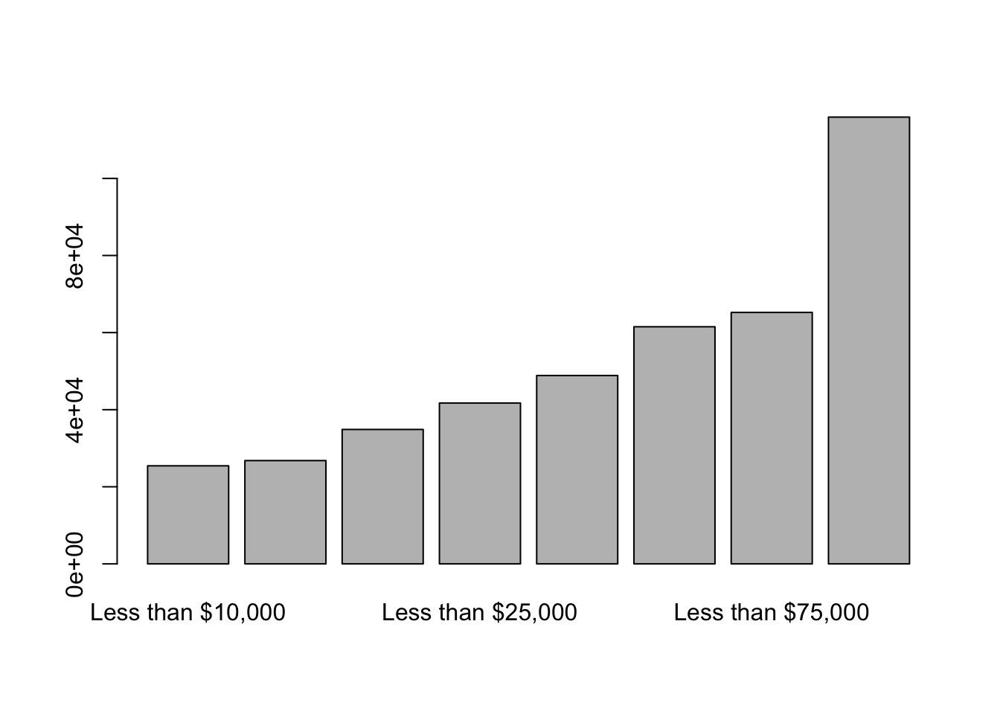
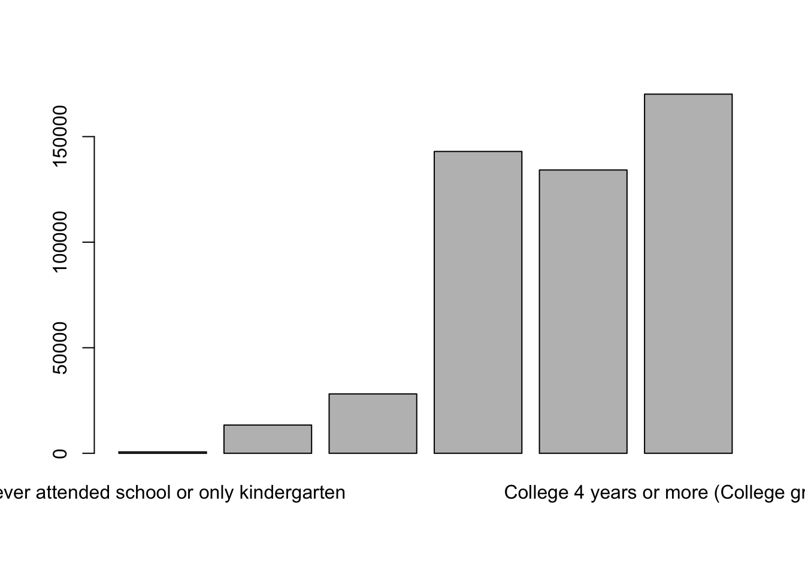
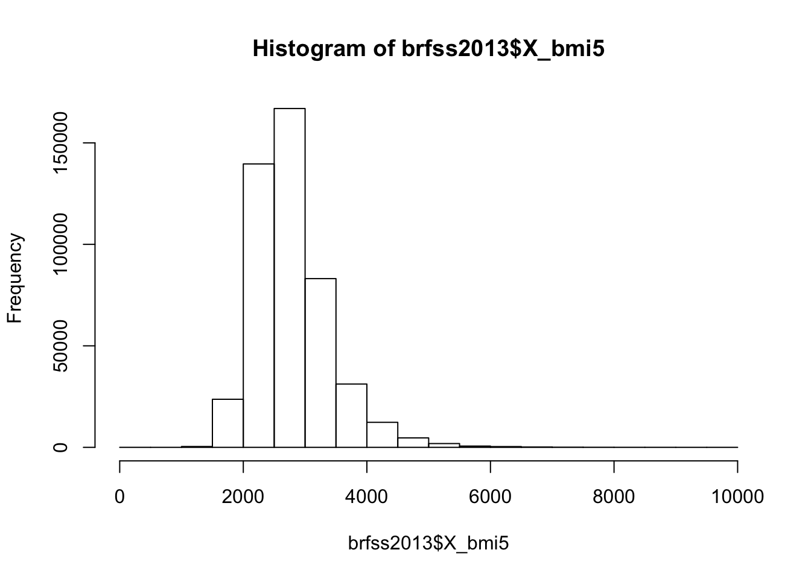

The Behavioral Risk Factor Surveillance System (BRFSS) is the nation’s premier system of health-related telephone surveys that collect state data about U.S. residents regarding their health-related risk behaviors, chronic health conditions, and use of preventive services.
The Newest one is 2016, but I only find the Rdata from 2013.
There are 486,303 records for 2016, by telephone survey. The November update includes recoding of responses for a variable (LASTDEN3) in California’s data and a calculated variable (_RFPAP33) set to missing in eight states which did not ask a question (HADHYST2) correctly for eight months.
Number of people, and score for mental health and physical health and BMI index #Describe each variable you are planning to use. For continuous variables, provide the mean, standard deviation and a histogram.
project1 <- c(brfss2013$educa,brfss2013$sex,brfss2013$income2,brfss2013$physhlth,brfss2013$menthlth,brfss2013$X_bmi5,brfss2013$genhlth,brfss2013$smoke100)
summary(brfss2013$physhlth)## Min. 1st Qu. Median Mean 3rd Qu. Max. NA's
## 0.000 0.000 0.000 4.353 3.000 60.000 10957hist(brfss2013$physhlth)
summary(brfss2013$menthlth)## Min. 1st Qu. Median Mean 3rd Qu. Max. NA's
## 0.000 0.000 0.000 3.383 2.000 5000.000 8627hist(brfss2013$menthlth)
summary(brfss2013$X_bmi5)## Min. 1st Qu. Median Mean 3rd Qu. Max. NA's
## 1 2367 2663 2782 3081 9769 26727hist(brfss2013$X_bmi5)